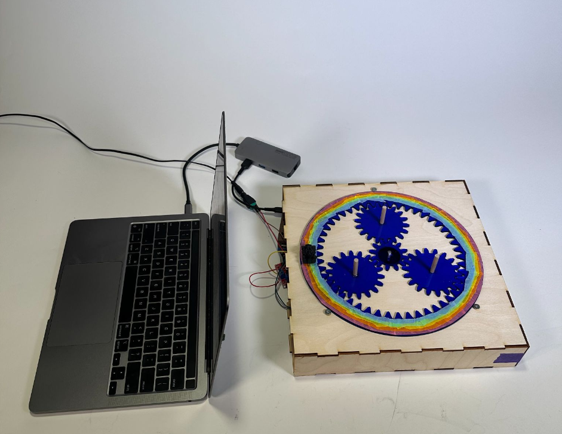
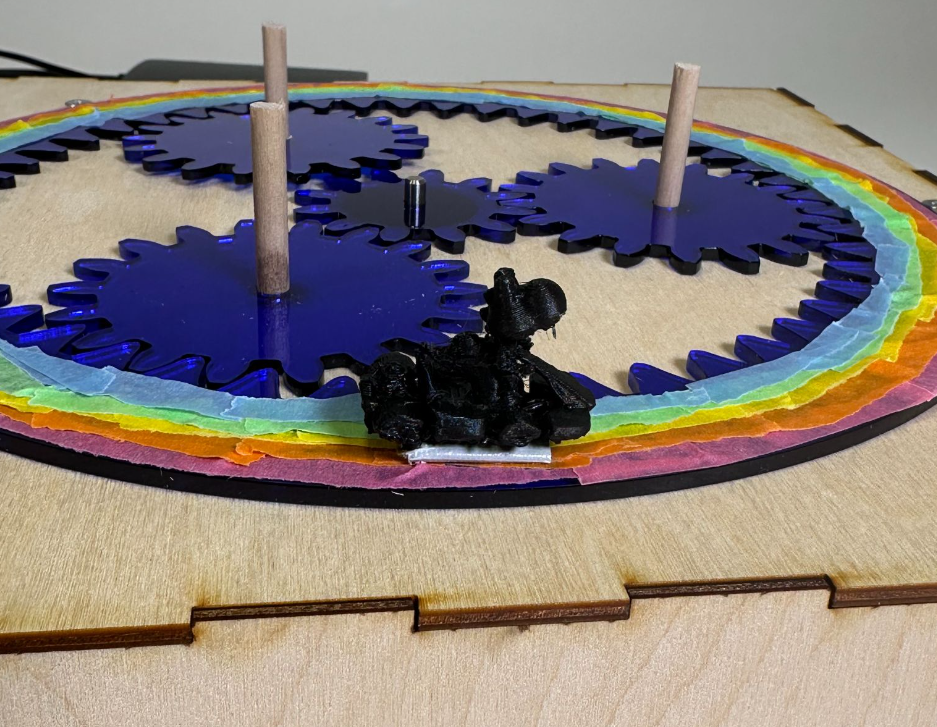
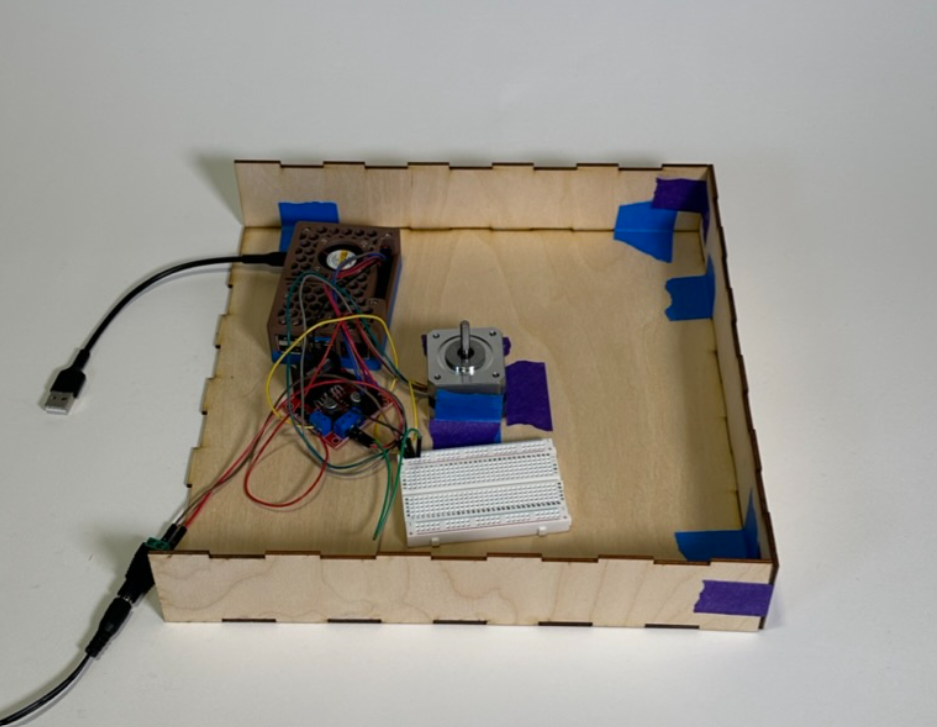
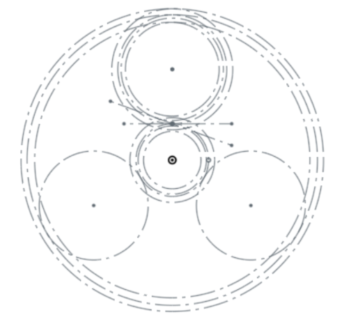
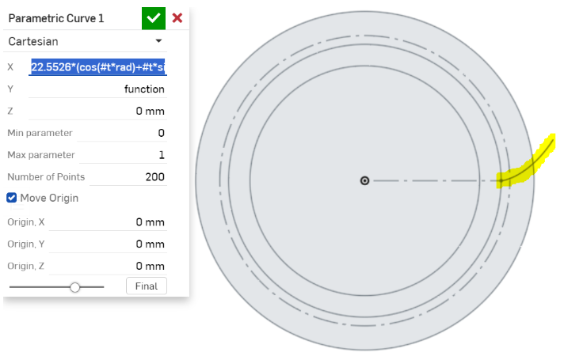
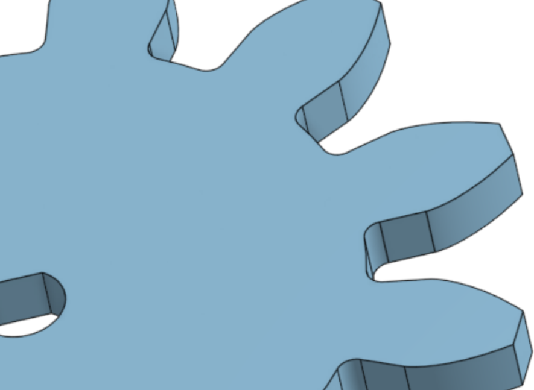
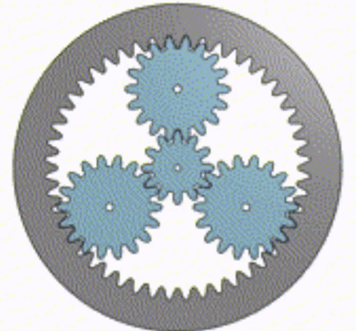
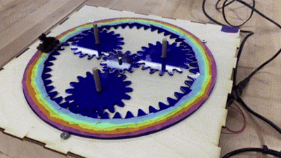

Homework1: Double Jump



Goal:
We were tasked with creating a gear system that translates a full 360 degree rotation into a 90 degree rotation.
Solution:
My partner and I decided to build a planetary gear system with three planet gears. We first used several online planetary gear generator tools to determine the number of teeth that the sun, planet, and ring gears should have in order to produce a 4:1 sun gear to ring gear output. We determined that the gears should have the following number of teeth:
Sun: 12 ; Planets: 18 ; Ring: 48
Next came the most challenging part of the assignment: modeling our own gears in CAD...
We decided to use Onshape CAD software. We pulled the pitch circle, pressure angle, addendum, and dedendum for each gear from the gear generator software and then using those values created a sketch of the relative gear positioning and all the important dimensions for each gear:

Modeling the teeth was the most difficult part of designing the gears. The curve that defines the shape of a gear tooth is called an involute curve - a parametric curve whose shape is based on the radius of the circle that it is drawn from. There is no tool in the standard Onshape library that allows you to draw parametric curves so instead we used a custom library designed by Onshape users Mahir and Llya Baran. It worked perfectly:

The rest of the design was fairly simple - using standard Onshape tools (mirror, extrude, etc) we were able to model the teeth:

And to verify that everything was meshing correctly, we animated the assembly in Onshape:

Finally, we laser cut the gears, assembled them, made them look Mario Kart-themed (the rainbow on the ring gear is Mario Kart's Rainbow Road, and the kart is driven by Yoshi), and tested them to make sure that they turned 90 degrees for a 360-degree motor turn:
